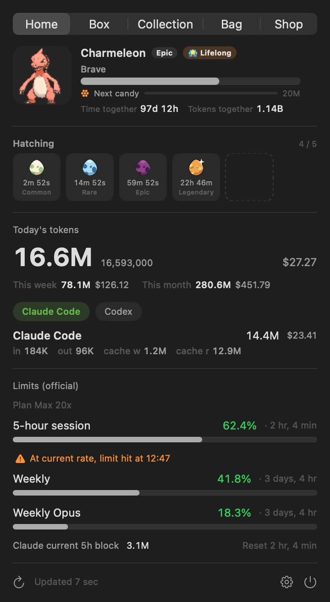
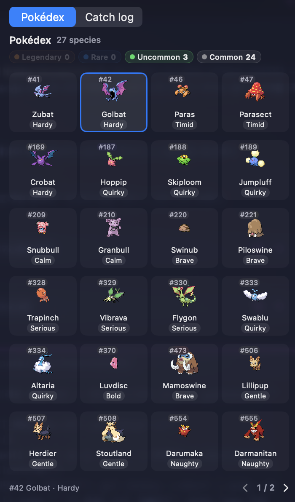
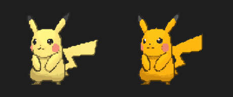
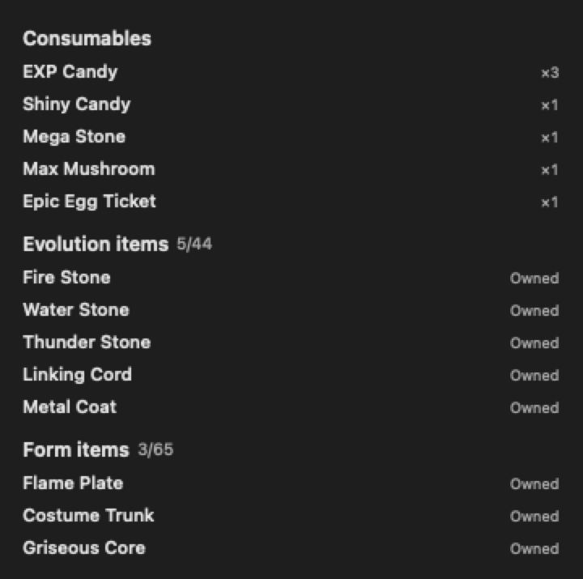
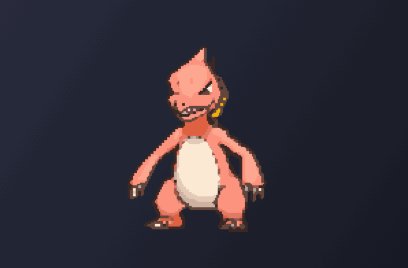

Turn the tokens you're already burning into a Pokémon that hatches, evolves, and fills a Pokédex — with today's spend and official limits right underneath.
macOS 14+Apple silicon & IntelSwift 6MIT

A glanceable usage tracker for AI coding — no dashboard, no browser tab — with a reason to actually open it.
Today's Claude Code + Codex + Gemini + Antigravity + OpenCode + Hermes + Cursor + Grok + Copilot + Kiro + Pi + omp tokens (compact, e.g. 253.4M) — combined total in the menu bar, per-service tabs in the popover.
Claude, Codex & Antigravity 5-hour / weekly utilization with live reset countdowns, color-coded as you approach the cap.
Projects when your current 5-hour window will hit 100% at the current spend rate — so a wall never surprises you.
Your usage raises a Pokémon that hatches — sometimes, by a rare stroke of luck, Shiny ✨ — evolves through its real line with natures and little celebrations, and fills a Pokédex.
Full Korean / English / Japanese / Spanish / French / Portuguese / German UI — and Pokémon names in your language, straight from PokéAPI.
Alerts when a limit crosses your warning / critical thresholds — and when your companion hatches, evolves, or graduates.
The tokens you've already used become spendable currency — buy Rare Candy to grow your Pokémon, a Mint to re-roll its nature, a Shiny Charm that permanently raises your shiny odds, or an egg to send off your companion and start fresh — plain, Uncommon-guaranteed, or Rare-guaranteed.
Let your companion live on the desktop instead of the menu bar — hover for today's usage, click to open the popover, right-click for a menu, drag to place it. Notifications can appear as a speech bubble above it.
Pin any species you already own to the menu bar and floating pet, independently of the one you're raising — while pinned, the menu bar stops following egg, hatch, and evolution changes, and raising progress stays on Home.
Logs outside the built-in paths? Add extra scan roots per provider — comma or newline separated, * wildcards, with a live count of what currently matches. Each provider keeps its own list, and custom roots are added to the defaults rather than replacing them.
Cached limit token expired? Paste a claude.ai session key under Settings → Advanced and official Claude limits come straight from claude.ai — no Keychain access, no password pop-up, and auto-polling keeps them fresh.
Pi forks like omp can route several models through one session log — usage is attributed to the real model id, and today's tokens break down per model in the popover.
Tokens spent since install grow a Pokémon through its real evolution tree — fetched live from PokéAPI, animated with Gen-V sprites.
Spend ~5M tokens and your egg hatches into a rarity-weighted Pokémon — one of 25 natures, and once in a rare while, Shiny ✨.
→Keep coding to evolve it through its 1 / 2 / 3-stage line, branches included.
→Reach the final form + threshold and it graduates — a fresh egg arrives.
→Every species you've owned folds into one Pokédex cell — and the catch log keeps each individual.
→Max out a 5-hour or weekly limit and you earn Rare Candy — spend it from the Bag to grow your current Pokémon.




Rarer Pokémon take more tokens to graduate — roughly 3 days (common) to 24 days (legendary) at heavy use.
How long it takes, what you'll see along the way, and what there is to collect — before you install.
The rarer the Pokémon, the longer it stays with you. Later stages cost more (3-stage line shown).
| Rarity | Stage 1 | Stage 2 | Stage 3 (graduate) | Total |
|---|---|---|---|---|
| Common | 125M | 250M | 375M | 750M |
| Uncommon | 312.5M | 625M | 937.5M | 1.875B |
| Rare | 500M | 1B | 1.5B | 3B |
| Legendary | 1B | 2B | 3B | 6B |
How many AI-coding tokens do you burn per day? (total, including cache reads)
Every number on this page is hard-coded in the app. No server, no purchases, no shortcuts — just code.
The companion in your menu bar isn't a decoration — it lives your coding rhythm, switching sprites and captions in real time.
When you rest, it rests. Weekend menu bars are quiet.
A few questions here and there — it idles beside you.
Your normal pace. It keeps busy too.
Agents running hot — so is your partner.
When a usage limit is close, it tires before you do. Take the hint.
Evolution moments and a graduation send-off — a few seconds worth catching.
Hatching has its own animation — and a Shiny hatch announces itself.
Not an ending — a loop. Every graduation fills a Pokédex slot and a new egg arrives.
| To collect | How it works |
|---|---|
| Species | 329 from Generations I–V — every hatch is random. You won't know until it cracks. |
| Rarities | Four tiers, Common to Legendary — the rare ones hatch rarely and stay longest. |
| ✨ Shiny | A rare stroke of luck at hatch — distinct colors, kept through every evolution. |
| Natures | One of 25 per hatch — the same species never feels quite the same. |
| Branches | Branching lines prefer a branch you haven't collected — the Pokédex fills itself as you keep raising. |
| Pokédex | Recorded as (starter → final form) pairs with the full line — same starter, different branch, different entry. |
macOS 14+ (Apple Silicon or Intel). The Homebrew cask handles everything.
One Homebrew command — ad-hoc/self-signed; the cask strips the quarantine attribute on install.
Prefer building yourself? swift build · swift test · ./scripts/build-app.sh → /Applications. See the README.
Downloading directly instead? It's ad-hoc/self-signed, so on first launch right-click PokeTokenBar.app → Open, or run xattr -dr com.apple.quarantine /Applications/PokeTokenBar.app. (Homebrew does this for you.)
Your usage stays on your Mac. The app reads your local Claude Code / Codex / Gemini CLI / Antigravity / OpenCode / Hermes / Cursor / Grok CLI / Copilot CLI / Kiro CLI / Pi Agent logs, never uploads them, and never runs claude/codex model turns. It does use the network — for Pokémon data & sprites (PokéAPI, cached locally), official limits, service status, and update checks — and none of those requests carry your usage. No Pokémon assets are bundled in the app.